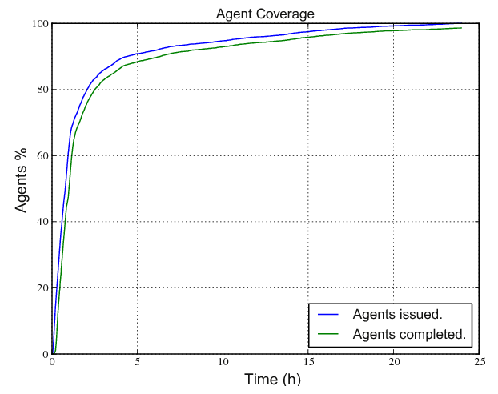
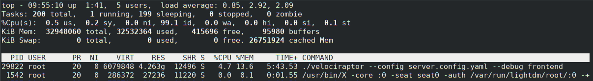

We are often asked how many resources does a Velociraptor deployment use? How should one spec a machine for a Velociraptor deployment?
We have previously said that one of the reasons we developed Velociraptor was to improve on the performance of GRR which was not scalable for our use case.
We've been working with the team at Klein & Co. on several intrusions over the past several months, which are providing valuable opportunities to deploy and test Velociraptor in a range of real world investigation scenarios. Through this process, we’ve been able to extend Velociraptor’s functionality and prove its performance on real client networks.
I thought I would write a short blog post to show how Velociraptor performed on such a recent engagement. In this engagement we deployed Velociraptor on AWS and selectively pushed the client to around 600 machines running a mix of MacOS and Windows.
This post will hopefully give readers some idea of how scalable the tool is and the typical workloads we run with it.
Since this is a smallish deployment we used a single VM with 32Gb of RAM and 8 cores. This was definitely over speced for this job as most of the time the server consumed less than 10% of one core:
top - 06:26:13 up 29 days, 2:31, 5 users, load average: 0.00, 0.01, 0.05 Tasks: 214 total, 1 running, 213 sleeping, 0 stopped, 0 zombie %Cpu(s): 0.5 us, 0.1 sy, 0.0 ni, 99.4 id, 0.0 wa, 0.0 hi, 0.0 si, 0.0 st KiB Mem: 32948060 total, 14877988 used, 18070072 free, 411192 buffers KiB Swap: 0 total, 0 used, 0 free. 13381224 cached Mem PID USER PR NI VIRT RES SHR S %CPU %MEM TIME+ COMMAND 19334 root 20 0 1277924 94592 12616 S 3.0 0.3 9:11.03 ./velociraptor --config server.config.yaml frontend 8 root 20 0 0 0 0 S 0.3 0.0 7:16.30 [rcuos/0]
You can see that the server consumed about 95mb when operating normally and CPU usage was around 3% of one core.
For this engagement we knew that we would be collecting a lot of data and so we specified a large 500gb volume.
Velociraptor works by collecting "Artifacts" from clients. Artifacts are simply encapsulated VQL queries which specify something to search for on the endpoint. Without going into the details of this engagement, we can say that we collected typical artifacts for a DFIR/Forensic investigation engagement. In the following I want to explore how well hunts performed for the following typical artifacts in order of complexity:
We ran these artifact collections over a large number of hosts (between 400-500) that fell within the scope of our engagement. Although the number of hosts is not huge, we hope to demonstrate Velociraptor's scalability.
One of the simplest and most common tasks in DFIR is to search the filesystem for a glob based on filename. This requires traversing directories and matching the filename based on the user specified expression - for example, find all files with the extension *.exe within the C:\Users directory.
Velociraptor can glob over the entire filesystem or over a limited set of files. Typically a full filesystem glob can take some minutes on the endpoint (it is equivalent to running the find unix command) and touches every file. We typically try to limit the scope of the glob as much as possible (e.g. only search system directories) but sometimes it is nice to run a glob over all mounted filesystems to make sure we don't miss anything. In this case we opted for a full filesystem scan.
We searched the entire deployment using a hunt (The hunt is constructed using the File Finder flow in the GUI) which just launches the artifact collection. Therefore the horizontal distance between the red and blue dot, in the graph below, represents the total time taken by the host to collect the artifact.
The graph shows how many hosts were recruited into this hunt on the Y axis. The X axis show the number of seconds since the hunt launch. The red points indicate the time when clients started their collection, while the blue dots indicate the time when the client completed the artifact collection and the server saved its results.
The inset shows the same data but zoomed into the time origin.
Velociraptor improves and builds on the initial ideas implemented within the GRR DFIR tool, and so it is interesting to compare this graph to a typical graph produced by GRR's hunt (reproduced from this paper).
The first noticeable difference is that Velociraptor clients complete their collection much faster than GRR's (the horizontal distance between the red and blue dots represents the time between when the collection is issued and the time it completes).
The main reason for this is that GRR's communication protocol relies on polling (by default every 10 minutes). Also, since hunting is so resource intensive in GRR, the clients actually poll the hunt foreman task every 30 minutes by default. This means that GRR clients typically have to wait up to 30 minutes to run a hunt!
The second difference is the slope of the line around the start of the hunt. GRR implements a hunt client rate - clients are recruited into the hunt slowly (by default 20 per minute) in order to limit the load on the frontends. Unlike GRR, Velociraptor does not implement a hunt rate since the Velociraptor frontend load is controlled by limiting concurrency instead (more on this below).
This means that Velociraptor can deliver useful results within seconds of the hunt starting. We see that this particular filename search typically takes 25-30 seconds and we see about 200 clients completing the hunt within this time consistently. The remaining clients are probably not online and they receive the hunt as they join the network. This makes Velociraptor hunts far more responsive and useful.
You might also notice a few outliers which spend a long time collecting this artifact - these machines have probably been shutdown or suspended while collecting this artifact.
A common technique is to examine the Master File Table (MFT) of an NTFS volume. By forensically analyzing the MFT it is possible to detect deleted files, time stomping and build a timeline of the system using tools like analyseMFT.py or ntfswalker .
In this case we decided to collect the $MFT from all the Windows hosts and post-process them offline. Typically the MFT is around 300-400mb and could be larger. Therefore this artifact collection is about performance downloading large quantities of data from multiple hosts quickly.
Velociraptor can read the raw NTFS partition and therefore read the $MFT file. We wrote the following artifact to just fetch the $MFT file:
name: Artifact.NTFS.MFT_puller description: | Uses an NTFS accessor to pull the $MFT parameters: - name: path default: \\.\C:\$MFT sources: - precondition: SELECT OS From info() where OS = 'windows' queries: - SELECT upload(file=path, accessor="ntfs") as Upload from scope()
Here is the timing graph for this artifact collection:
This collection takes a lot longer on each host as clients are uploading around 400mb each to the server, but our server was in the cloud so it had fast bandwidth. Again we see the hosts that are currently up being tasked within seconds, while as hosts come online gradually we see them receiving the hunt and a few minutes later uploading their $MFT file.
Was the frontend loaded at the time? I took a screenshot of top on the server seconds after launching the hunt:
We can see that the CPU load is trivial (4.7%) but the major impact of a heavy upload collection is the memory used (about 4.7gb - up from about 100mb). The reason is that each client is posting a large buffer of data (several mb) simultaneously. The server needs to buffer the data before it can decrypt and process it which takes memory.
In order to limit the amount of memory used, Velociraptor limits the total number of connections it is actively processing to 8-10 concurrent connections. By carefully managing concurrency we are able to keep a limit on server memory use. We may lower the total memory use by reducing the concurrency (and therefore maybe fit into a smaller VM). Clients simply wait until the server is able to process their uploaded buffers. If the server takes too long, the clients automatically back off and retry to send the same buffer.
The final example of a very intense artifact is to scan the entire filesystem with a YARA rule. This not only requires traversing the entire filesystem, but also opening each file and searching it.
One of the dangers with such a scan is that users will be negatively impacted as their workstations start to read every file on disk! The main resources a YARA scan consumes is disk IO and CPU load. Users might complain and blame Velociraptor for their machine being slow (disk IO may negatively affect performance much more than CPU load!).
However in this case, we don't care how long we take to scan the user's system, as long as every file was scanned, and as long as the endpoint is not overloaded and the user's work is not affected. Luckily Velociraptor allows us to specify the trade-off between collection time and collection intensity.
Velociraptor controls client side load by rate limiting the client's VQL query. Each VQL plugin consumes an "operation" from the throttler. We define an "operation" as a notional unit of work - the heavier the VQL plugin's work, the more operations are consumed. For example for yara scanning, an operation is defined as 1mb of scanned data, or a single file if the file is smaller.
When a user issues an artifact collection task, they may limit the rate at which operations are performed by the client. The Velociraptor agent then limits the operations to the specified rate. For example, if the rate is 20 ops/sec then the client will scan less than 20mb per seconds.
Other collections may run concurrently at different rates, though; The client is not blocked while performing a single artifact collection. This makes sense since we often need to collect a low priority artifact slowly, but we do not want this to compromise rapid response to that host.
For example, one of our targets was a server with large attached storage. We ran the Yara scan over this system, scanning the first 100Mb of each file, at a rate of 50 ops/sec. In total we scanned 1.5Tb of files and the scan took 14 hours (for a total scan rate of 30Mb/sec).
Velociraptor by default collects the Generic.Client.Stats artifact, which samples the client's CPU utilization and memory usage every 10 seconds. These samples are streamed to the server and form a record of the client's footprint on the endpoint. We can use this data to visualize the effects of performing the yara scan on this host:
Above is the CPU usage on that particular server over the course of a full day (24 hours). The 14 hour yara scan is clearly visible but at no time is CPU utilization exceeding 30% of one core. With endpoint disk IO limited to about 30mb/sec we have achieved a balance between performance and endpoint load we are happy with.
We can see that most endpoints take approximately an hour to perform this yara scan, but server load is minimal since the server simply stores the results of the scans while doing minimal processing.
This post provides some typical numbers for Velociraptor performance in typical DFIR engagements. We also covered some considerations and trade-offs we must think about when issuing large artifact collections. Readers can use these as a guideline in their own deployments - please comment below about your experiences. Velociraptor is under very active development and this feedback is important to ensure we put in place the mechanisms to account for more use cases.
We would like to thank the folk at Klein&Co for their wonderful support and assistance in Velociraptor development.